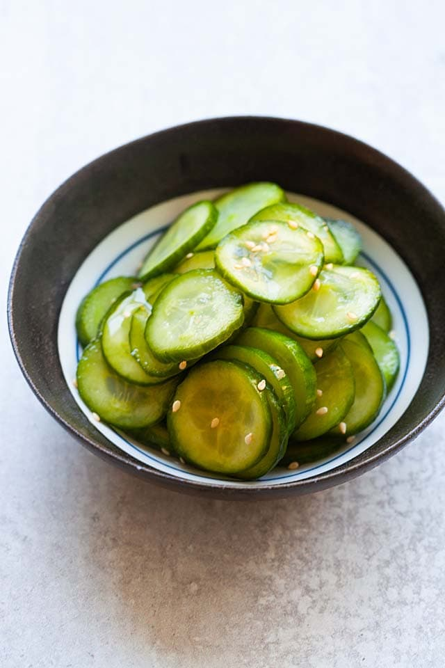

GINGER SOY SOBA

Pickled cucumber is a refreshing and healthy salad served as an appetizer. Learn how to pickle cucumbers with this easy and fail-proof recipe.
Pickled cucumber is a refreshing and healthy cold appetizer or side dish in Asian cooking.
It's delightful to have during summertime when the weather is hot.
Pickled cucumbers are popular all over Asia, especially in China, Taiwan, Korea and Japan.
There are regional variations of this dish. They can be spiced up with chili oil, black vinegar, and garnished with sesame seeds.
The cucumbers can be sliced thin, round, or cut into chunks or strips.
Ingredients:
- 8 oz. (250 g) cucumber
- 1 teaspoon salt
- 1 tablespoon sugar
- 2 teaspoons Chinese rice vinegar or Apple cider vinegar
Sweet ginger sauce:
- 2 teaspoons soy sauce
- 1/2 teaspoon ginger, minced
- 2 teaspoons sesame oil
- 1/2 teaspoon chili oil
- 1/2 teaspoon rice wine, vinegar
- 2 teaspoons honey
- salt and pepper as needed
Steps:
- Rinse the cucumber thoroughly with cold running water.
- Slice the cucumber into thin slices.
- Transfer the sliced cucumber into a bowl, add the salt and mix well. Set aside for 30 minutes.
- Drain the water seeping out of the cucumber. Add the sugar and Chinese rice vinegar to the cucumber. Chill in the refrigerator for 1 hour before serving. Serve cold.
BON APPETIT!
Return to top
Return to main page